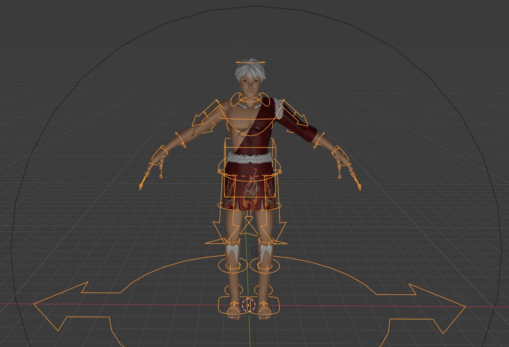

Coco's Week 6 Individual Report
What were your concrete goals for the week?
-
I will hopefully get the skeletons set up later this week Friday/Saturday then I will work with David to test them out.
-
Finish some of the weapons/potions
-
Have the some of the textures done
What goals were you able to accomplish?
- I have the skeletons fixed and did a basic animation for walking/running, the knees look a bit tweaked, still refining the details
- Basic model for potion & background pillars
If the week went differently than you had planned, what were the reasons?
- Animation is hard, and the problems seem to be case by case. What's magical about modeling tools is even if followed all steps
in the tutorial, it still breaks somewhere, it's hard to find a solution online and have to debug yourself and that's time consuming
- Midterm stresses again that's quarter system
- A project from lab due closely too

What are your specific goals for next week?
- I am a bit unsure about how should I further align the scene/wall models with the current maze design, I will figure that out and get the background done
- Finalizing all the animation and make smooth transitions
- Finish model for portions and get some weapons done
What did you learn this week, if anything (and did you expect to learn it?)
- Animation, weights, rig...
What is your individual morale (which might be different from the overall group morale)?
- Stressed, but the group is super supportive TT.